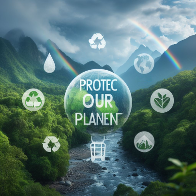
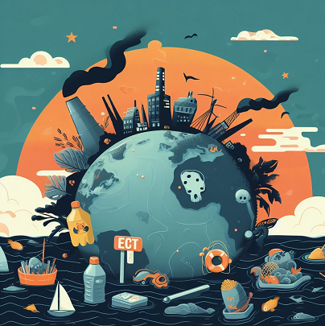

Pourquoi protéger la nature?
La nature, vaste et magnifique, est une source inépuisable de bienfaits pour l'humanité. Elle offre bien plus que des paysages pittoresques , elle joue un rôle crucial dans notre bien-être physique, mental et émotionnel.
Les espaces naturels, qu'il s'agisse de forêts luxuriantes, de plages paisibles ou de montagnes imposantes, sont des havres de paix qui permettent aux humains de s'évader du tumulte quotidien. La simple contemplation d'un paysage naturel peut apaiser l'esprit, réduire le stress et raviver notre connexion avec le monde qui nous entoure.
La biodiversité de la nature contribue également à notre santé. Les plantes et les arbres produisent de l'oxygène essentiel à notre survie, tandis que les écosystèmes équilibrés contribuent à la régulation du climat. Les espaces naturels offrent des opportunités d'activités physiques, favorisant ainsi un mode de vie sain. Que ce soit la randonnée, le vélo ou simplement une promenade, la nature nous invite à bouger, à respirer profondément et à prendre soin de notre corps.
Sur le plan émotionnel, la nature suscite l'émerveillement et l'admiration. Observez la diversité des espèces, entendez le chant des oiseaux, sentez la brise légère sur notre peau, toutes ces expériences nourrissent notre âme. La nature nous rappelle notre place dans l'univers, éveillant un sentiment d'humilité et de respect envers la vie sous toutes ses formes.
Enfin, la nature offre des leçons précieuses. Son cycle perpétuel de croissance, de déclin et de renouveau nous enseigne la résilience, l'adaptabilité et la nécessité de coexister harmonieusement. En préservant et en respectant la nature, nous investissons dans notre propre avenir et celui des générations futures.
Ainsi, la nature est bien plus qu'un décor simple ; elle est une alliée précieuse dans notre quête de bien-être. En la protégeant, nous préservons non seulement la richesse de notre planète, mais aussi notre propre santé physique et mentale.
Comment aider la nature?
Comment contribuer à la protection de la nature?:

Réduire la pollution:

Trier et recycler les déchets:
Me contacter: RamziBouraghdaAhmed@gmail.com
Created BY: Ramzi Ahmed and Hamza Salim Bouraghda